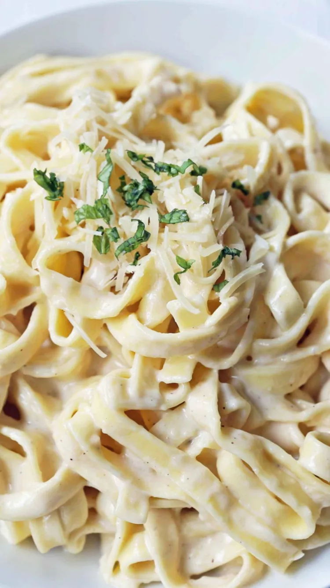

Fettuccine Alfredo

Fettuccine Alfredo
A classic dish that never gets old. Add your choice of protein or vegetable to make this fettuccine your own.
Ingredients
- 24 ounces dry fettuccine pasta
- 1 cup butter
- ¾ pint heavy cream
- Salt and pepper to taste
- 1 dash garlic salt
- ¾ cup grated Romano cheese
- ½ cup grated Parmesan cheese
Steps
- Bring a large pot of lightly salted water to a boil. Add fettuccine and cook for 8 to 10 minutes or until al dente; drain.
- Melt butter into cream in a large saucepan over low heat; add salt, pepper, and garlic salt. Increase the heat to medium; stir in grated Romano and Parmesan cheese until melted and sauce has thickened.
- Add cooked pasta to sauce and toss until thoroughly coated; serve immediately.